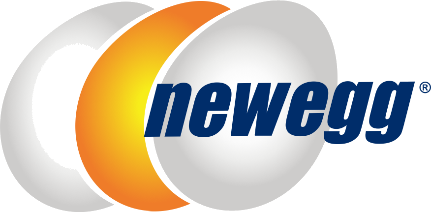

June 2026 to Aug 2026

Newegg Commerce, Inc.
Junior Marketing Analyst Intern · Diamond Bar, CA
Owned on-page SEO and conversion work across six landing pages, rewriting title tags, meta descriptions, and headings and reworking CTA placement, which lifted click-through 18% and organic sessions 22% quarter over quarter. Built a mobile app front end through AI-assisted development with Claude Code, turning wireframes into working components and shortening the design-to-build cycle. Automated templated banner workflows in Abyssale for AMD, Intel, NVIDIA, Dell, and HPE, producing 40+ assets and cutting turnaround 60%, while coordinating delivery with design and engineering in Jira and Confluence.